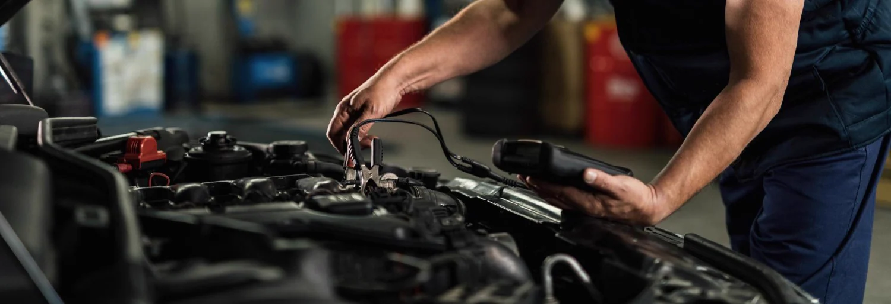
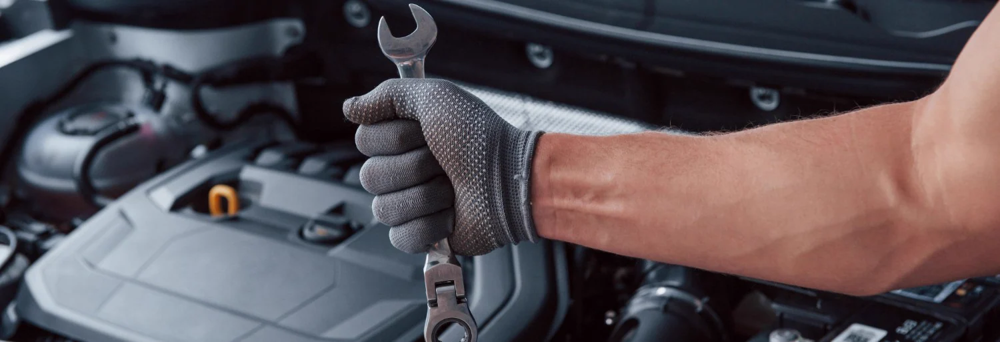
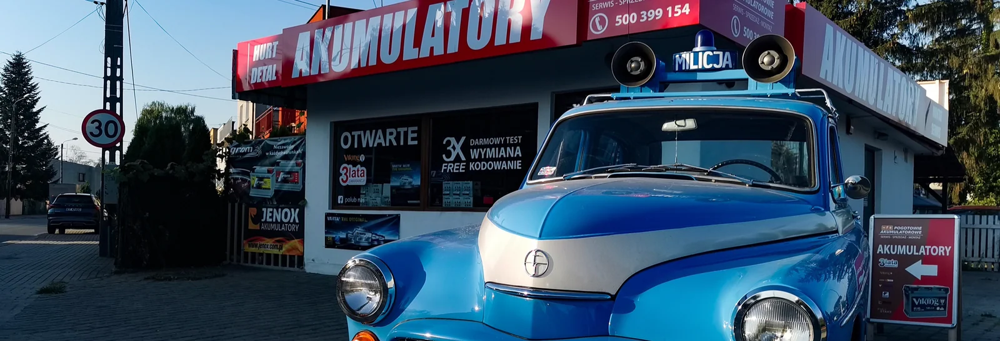

Oferujemy NAJWIĘKSZY wybór akumulatorów w Tarnowie: sprawdzone marki w najniższych cenach
Pogotowie Akumulatorowe
TwojeCentrumAkumulatorów
Akumulatory
Zapraszamy do zapoznania się z naszym szerokim wyborem akumulatorów.
PogotowieAkumulatorowe
Pomagamy w odpalaniu unieruchomionego pojazdu
500 399 154
Pomoc 24/7 na terenie Tarnowa
Największy wybór w Tarnowie
O Nas
Sprawdzone marki i gwarancja niezawodności! Sprawdź to!
Dowiedz się więcej o naszej firmie
Sprawdź To!Akumulatory
Sprawdź Sam!Akumulatory
Zapraszamy do zapoznania się z naszym szerokim wyborem akumulatorów.
Sprawdź Sam!Nasze Usługi
Odpalenie unieruchomionego pojazdu
Oferujemy Mobilny Serwis Akumulatorów . Zadzwoń do nas, a odpalimy Twój unieruchomiony pojazd. Dokonamy diagnozy akumulatora, a także sprawdzimy kondycję podzespołów.
Montaż zakupionego akumulatora na terenie Tarnowa
Kupując akumulator w naszej firmie zawsze możesz liczyć na jego wymianę. Jeśli akumulator odbierasz w naszym sklepie firmowym taką usługę wykonujemy bezpłatnie. Wybierając zakup z dostawą do domu wybierz opcję …
Test akumulatora
Test akumulatora w sklepie stacjonarnym wykonasz bezpłatnie. Oferujemy profesjonalne i certyfikowane narzędzia do diagnostyki akumulatorów. Wykonując taki test zawsze otrzymujesz papierowy wydruk potwierdzający s…
Kodowanie akumulatora
Wymieniając akumulator w pojeździe z systemem Start/Stop ważne jest dopisanie nowego akumulatora do komputera. Dla klientów kupujących akumulator w naszym sklepie usługa ta jest całkowicie bezpłatna. Zaoszczędz…
Transport akumulatora do klienta na terenie Tarnowa
Oferujemy dojazd do klienta z zakupionym akumulatorem. Usługę dostawy realizujemy w tym samym dniu roboczym w godzinach 8:00-17:00. Cennik dostaw uzależniony od odległości.
Wymiana akumulatora z podtrzymaniem elektroniki
Nie posiadasz kodu do radia? Boisz się, że utracisz swoje dane zapisane na urządzeniu w swoim pojeździe? Oferujemy wymianę akumulatora z podtrzymaniem elektroniki dzięki czemu będziesz miał pewność, że po wymia…
Test alternatora i rozrusznika
Kluczową rolę we właściwym funkcjonowaniu pojazdu mają również rozrusznik i alternator. Oferujemy test wraz z wydrukiem.
Ładowanie akumulatorów, serwis pogwarancyjny
Rozładowany akumulator? Teraz to nie problem. Jeśli nie posiadasz urządzenia do ładowania akumulatora oferujemy usługę profesjonalnego ładowania z funkcją odsiarczania oraz przegląd stanu elektrolitu. Możesz sk…
Sprawdzone
marki
Marki
Dlaczego warto u nas kupować?



Dysponujemy profesjonalnym sprzętem do testów i kodowania akumulatorów
Zatrudniamy wyłącznie profesjonalistów w dziedzinie akumulatorów i mechaniki samochodowej
Oferujemy niezawodność i kompetencje potwierdzone certyfikatem Banner
Wieloletnie doświadczenie i zadowolenie tysięcy klientów
Nasze Porady
Na naszym blogu znajdziesz wiele ciekawych artykułów.
Poczytaj!Opinie
naszych klientów
Bardzo polecam Pogotowie Akumulatorowe! Przyjechałam sprawdzić napięcie w akumulatorze i spotkałam się z pełnym profesjonalizmem oraz przede wszystkim uczciwym podejściem do klienta. Pan dokładnie sprawdził akumulator i zamiast namawiać mnie na zakup nowego, poinformował, że wystarczy go odpowiednio doładować. Co więcej, sama usługa sprawdzenia została wykonana całkowicie bezpłatnie. Bardzo doceniam takie podejście — bez naciągania na niepotrzebne koszty, za to z konkretną i fachową poradą. W dzisiejszych czasach taka uczciwość naprawdę zasługuje na uznanie. Zdecydowanie będę polecać to miejsce innym i w razie potrzeby na pewno wrócę!
Szybko i fachowo. Pełen profesjonalizm. Bardzo dobra obsługa, pomimo, że było już po godzinach otwarcia. Samochód został "odpalony" pod sklepem. Pełne doradztwo w sprawie zakupu. Bez naciagania. Rzetelne podejście i odrazu widać zaangażowanie a tak jest tylko wtedy kiedy praca jest pasją. Polecam na 100%
Gdyby się dało dałabym sześć gwiazdek! Serdecznie polecam Pogotowie Akumulatorowe. Szybki dojazd na miejsce, pomoc we wskrzeszeniu samochodu oraz wymiana na nowiutki akumulator w bardzo przystępnej cenie. Polecam z całego serca!
Szybka, sprawna, bezproblemowa obsługa. Można dzwonić i każdej porze, świątek, piątek profesjonalnie załatwią sprawę. ❤
Przyjechali w 20min do rozładowanego akumulatora. Sprawdzili, naładowali. Akumulator był do wymiany. Wymiana w ich oddziale zajęła kolejne 10min. Szybko i sprawnie. Polecam
Bardzo polecam Pogotowie Akumulatorowe! Przyjechałam sprawdzić napięcie w akumulatorze i spotkałam się z pełnym profesjonalizmem oraz przede wszystkim uczciwym podejściem do klienta. Pan dokładnie sprawdził akumulator i zamiast namawiać mnie na zakup nowego, poinformował, że wystarczy go odpowiednio doładować. Co więcej, sama usługa sprawdzenia została wykonana całkowicie bezpłatnie. Bardzo doceniam takie podejście — bez naciągania na niepotrzebne koszty, za to z konkretną i fachową poradą. W dzisiejszych czasach taka uczciwość naprawdę zasługuje na uznanie. Zdecydowanie będę polecać to miejsce innym i w razie potrzeby na pewno wrócę!
Szybko i fachowo. Pełen profesjonalizm. Bardzo dobra obsługa, pomimo, że było już po godzinach otwarcia. Samochód został "odpalony" pod sklepem. Pełne doradztwo w sprawie zakupu. Bez naciagania. Rzetelne podejście i odrazu widać zaangażowanie a tak jest tylko wtedy kiedy praca jest pasją. Polecam na 100%
Gdyby się dało dałabym sześć gwiazdek! Serdecznie polecam Pogotowie Akumulatorowe. Szybki dojazd na miejsce, pomoc we wskrzeszeniu samochodu oraz wymiana na nowiutki akumulator w bardzo przystępnej cenie. Polecam z całego serca!
Szybka, sprawna, bezproblemowa obsługa. Można dzwonić i każdej porze, świątek, piątek profesjonalnie załatwią sprawę. ❤
Przyjechali w 20min do rozładowanego akumulatora. Sprawdzili, naładowali. Akumulator był do wymiany. Wymiana w ich oddziale zajęła kolejne 10min. Szybko i sprawnie. Polecam
★★★★★Google
Zadbaj
o środowisko
Nie wyrzucaj starego akumulatora!
Przekaż go sprzedawcy kupując nowy.